1968
Intel Founded
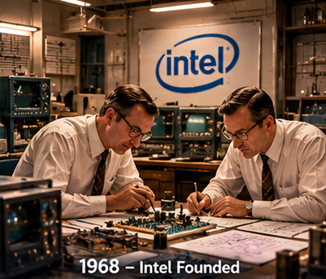
Robert Noyce and Gordon Moore rename the newly formed company NM Electronics to Intel Corporation, laying the foundation for decades of technological innovation.
Innovation • Technology • Sustainability
Explore Intel's journey through time and discover how decades of technological innovation have evolved alongside a growing commitment to a more sustainable future.
Explore the timeline1968 — 2026
From the beginning of Intel to modern sustainability commitments, explore key moments in technology and environmental progress.

Robert Noyce and Gordon Moore rename the newly formed company NM Electronics to Intel Corporation, laying the foundation for decades of technological innovation.
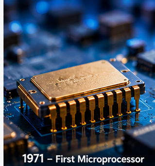
Intel debuts the 4004, the world's first commercial microprocessor, helping ignite the microprocessor revolution and the future of computing devices.
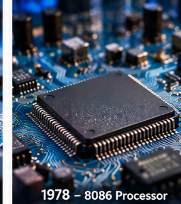
Intel launches the 8086 processor, establishing the x86 architecture that would influence generations of personal computers and servers.
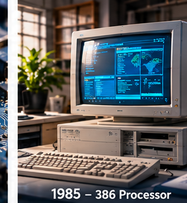
Intel introduces the 386 processor with 32-bit architecture, ushering in a new era of performance and multitasking for personal computers.
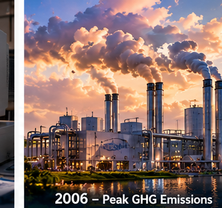
This year marks Intel's highest annual greenhouse gas emissions for operations. In subsequent years, Intel invests in chemical abatement, renewable energy, and energy-efficient manufacturing.
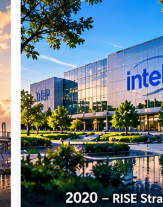
Intel launches its RISE strategy and 2030 goals, focusing on responsible business, inclusion, sustainability, climate action, water stewardship, and waste reduction.
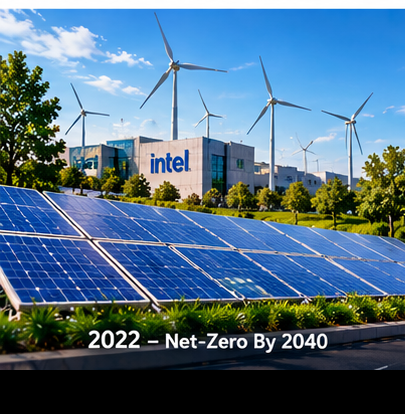
Intel announces its commitment to achieve net-zero greenhouse gas emissions for Scope 1 and 2 across its global operations by 2040.
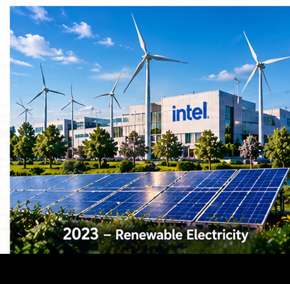
Intel reaches 99% renewable electricity usage worldwide, reducing operational carbon emissions and progressing toward its long-term sustainability goals.
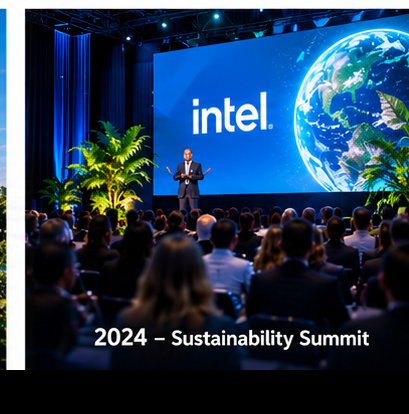
Intel hosts its first Sustainability Summit, bringing together suppliers, government officials, and industry leaders to collaborate on more sustainable semiconductor manufacturing.
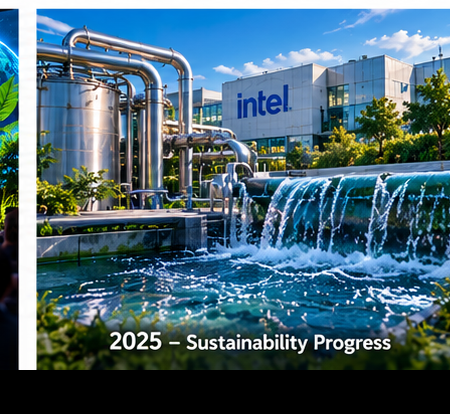
Intel reports continued progress in renewable electricity, water conservation, waste reduction, and cleaner manufacturing as its sustainability efforts continue.
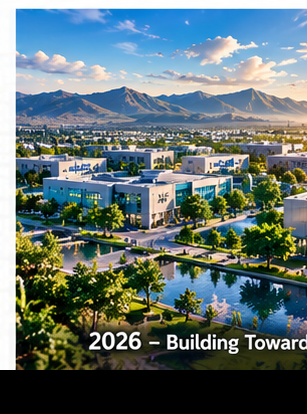
Intel continues working toward its 2030 sustainability goals while pursuing its longer-term commitment to net-zero greenhouse gas emissions across global operations.
Scroll to explore Hover or focus on a milestone to learn more
Looking Forward
Intel's timeline continues beyond these milestones as technology, manufacturing, and sustainability goals evolve together.